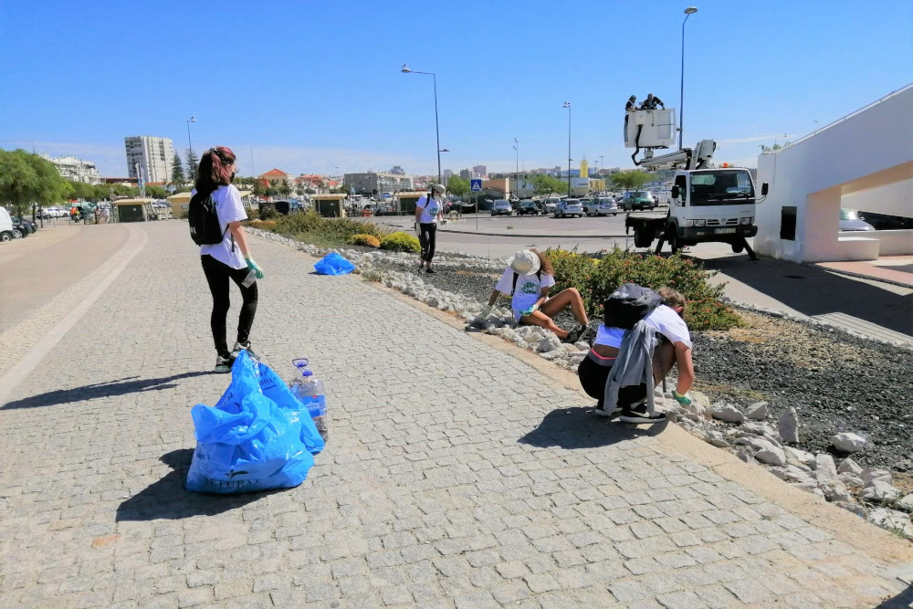
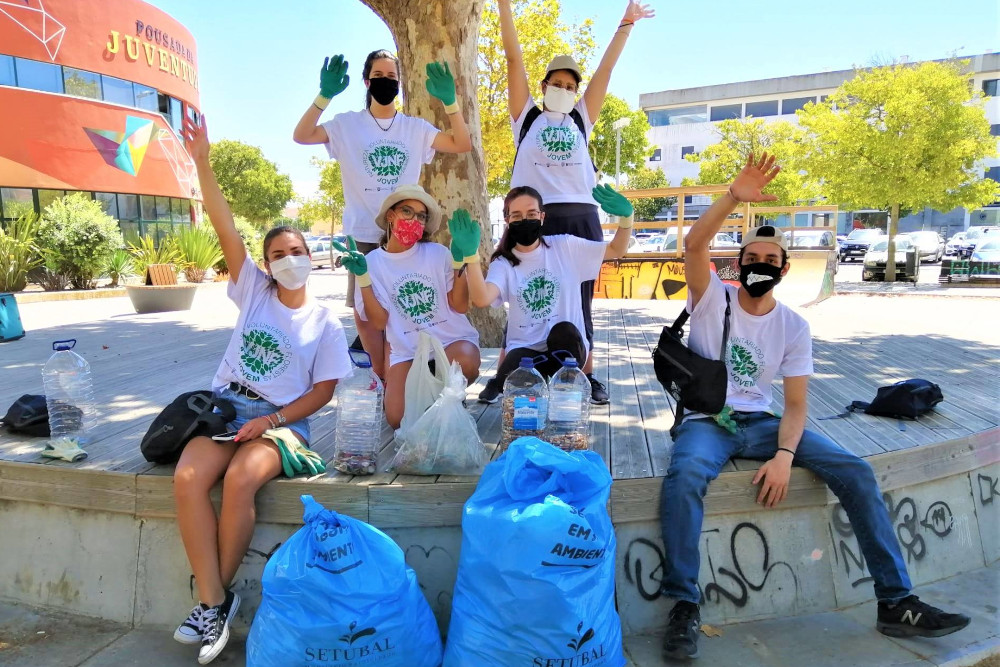
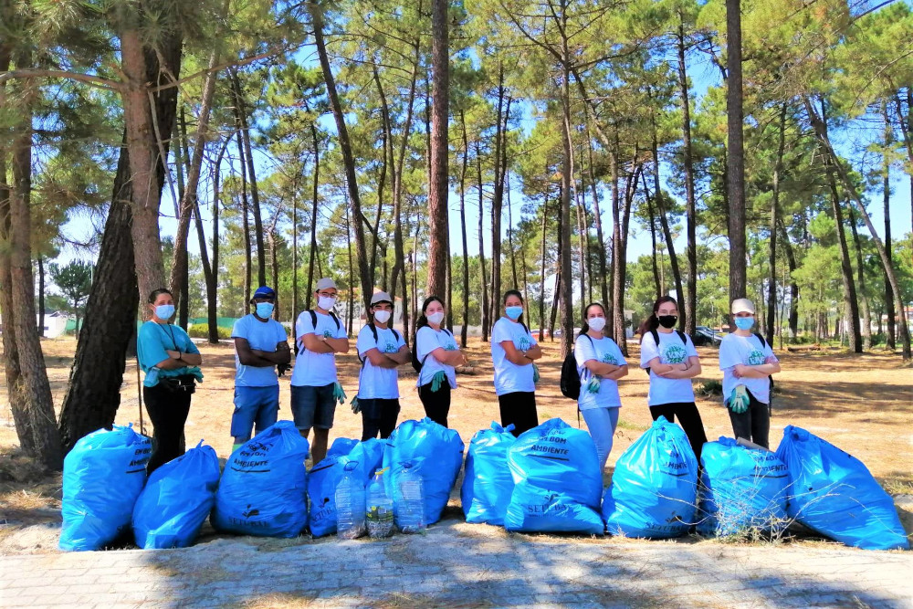
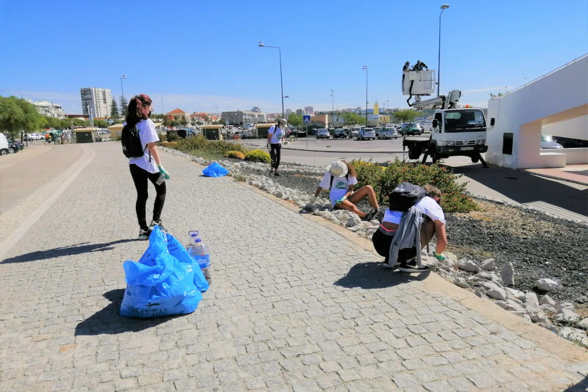
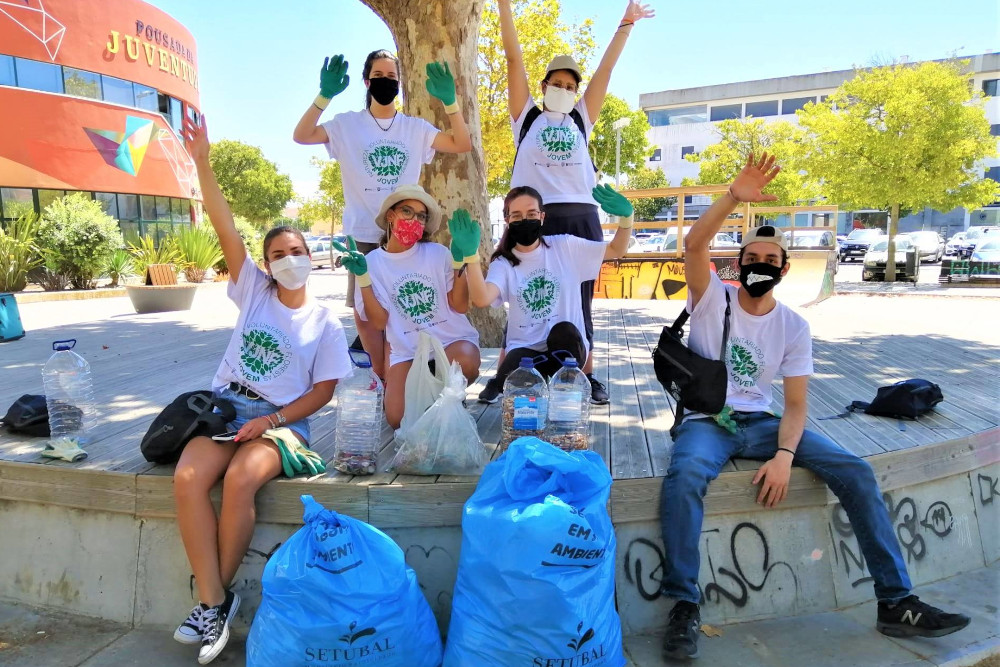
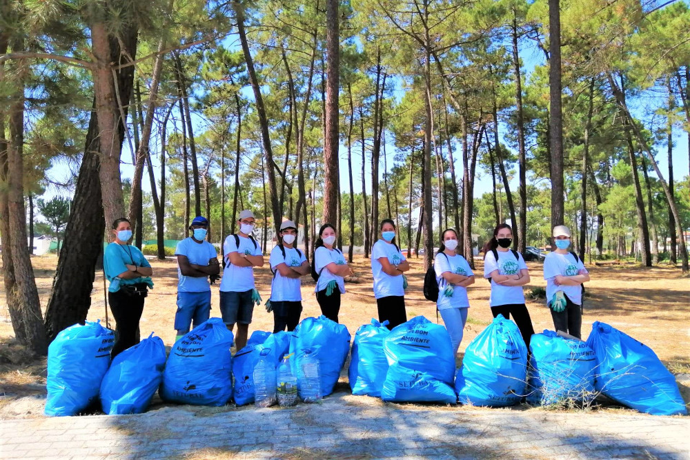

Quem somos?
Somos a Associação de Voluntariado de Setúbal, uma organização sem fins lucrativos dedicada a promover a solidariedade, a entreajuda e o compromisso social na nossa comunidade.
Acreditamos que cada pessoa pode fazer a diferença. Por isso, mobilizamos voluntários de todas as idades para apoiar causas locais, desde o apoio a famílias carenciadas até à preservação ambiental e iniciativas culturais.
Com sede em Setúbal, trabalhamos lado a lado com escolas, instituições e empresas locais para construir uma cidade mais justa, humana e sustentável. Também organizamos campanhas mensais e ações pontuais, garantindo formação e proteção aos nossos voluntários.
Juntos, transformamos pequenas ações em grandes mudanças.
A nossa missão
Promover o bem-estar social e ambiental em Setúbal, mobilizando voluntários para projetos que ajudam famílias, idosos, jovens e o ambiente. Trabalhamos com transparência, proximidade e respeito pela diversidade.
O que fazemos
- Distribuição de alimentos e bens de primeira necessidade.
- Atividades educativas e de ocupação para crianças e jovens.
- Limpezas de espaços públicos e ações ambientais.
- Apoio a lares e acompanhamentos a idosos.
 




